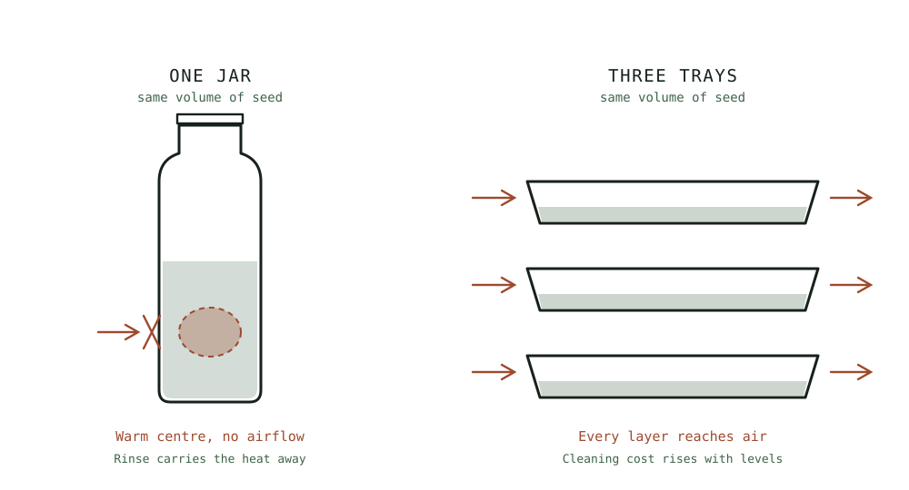

Guide
Jars, Trays, and Automatic Sprouters
Which sprouting system to buy, decided by which failure you are personally likely to produce rather than by which one is best.
As an Amazon Associate this site earns from qualifying purchases. Links to products may be affiliate links. This costs you nothing extra and does not change what gets recommended. Nothing here is medical advice.
Jars, Trays, and Automatic Sprouters
The equipment question is usually asked as which system is best, and answered with a ranking. That framing produces a cupboard full of abandoned gear, because all three systems produce good sprouts and they fail in completely different ways.
The useful question is which failure you are personally likely to produce. Answer that and the purchase decides itself.

What every system has to do
Strip away the marketing and a sprouting vessel performs four functions. Understanding them makes the comparison straightforward.
It has to drain. Water that stays in contact with the mass becomes a growth medium for whatever was on the seed. Drainage is the single most important mechanical property, and it is where cheap systems and expensive ones genuinely differ.
It has to breathe. A germinating mass consumes oxygen and generates heat and carbon dioxide. A sealed container ferments. Every workable system provides mesh, perforation, or open air.
It has to be rinsed on schedule. Twice daily minimum, three times in warm weather. No vessel does this for you unless it is a machine.
It has to be cleaned between batches. This sounds trivial and is the reason most tray systems get abandoned.
The jar system
A wide mouth jar with a stainless mesh lid, resting mouth down at a steep angle in a rack or bowl.
What it does well. It is inexpensive enough to try without commitment. It occupies almost no space and stores inside itself. Cleaning is a thirty second job with a brush. Glass shows you exactly what is happening in the middle of the mass, which is a genuine diagnostic advantage that opaque systems lack. For seeds in the mung and lentil range it produces results indistinguishable from anything costlier.
Where it fails. Capacity is the obvious limit. A one litre jar comfortably produces four to six cups of finished sprouts, which is a household's weekly supply and not a day's if you are enthusiastic. The subtler limit is the drainage angle. A jar sitting too flat pools water at the base, and pooled water is the direct cause of the sour batch that makes people quit. The hub page has the cross section showing the angle that works.
Buy this if you are starting out, if you have not yet proven to yourself that you will eat sprouts weekly, or if you are sprouting one variety at a time.
The tray system
Stacked shallow trays with perforated bases, draining from one level to the next into a collection tray.
What it does well. Airflow is the real advantage. A shallow layer of sprouts has no dense centre to overheat, which means a tray tolerates warm kitchens and heavier seed loads far better than a jar. Capacity scales by adding levels rather than by buying a second system. Trays also handle fine seeds better, since alfalfa and broccoli spread thin instead of clumping into a mass.
Where it fails. Cleaning. Every tray has a perforated base, and perforated bases hold residue. A tray stack needs to be properly washed between every batch, and skipping that is how a system that worked for a month suddenly produces a bad smell. Trays also occupy permanent counter space in a way a jar does not, and they are awkward to store.
a stackable stainless tray system is the usual form this takes. Buy this if you are already sprouting weekly, if you want two or three varieties running at once, or if your kitchen runs warm enough that jars keep going sour on you.
The automatic sprouter
A powered unit that rinses on a timer, usually pumping water over the mass at set intervals and draining to a reservoir.
What it does well. It solves the one failure mode that actually stops people, which is the missed rinse. A machine does not go away for the weekend, forget the evening cycle, or decide that once today is probably fine. Consistency is the entire value proposition and it is a real one.
Where it fails. Cost, permanently occupied counter space, and a pump and reservoir that need their own cleaning routine. There is also a quieter problem: a machine removes you from the process, which means you notice a bad batch later than you would with a glass jar in front of you.
Buy this if you have already abandoned a jar once for reasons of consistency rather than interest. It is a poor first purchase, because on day one you do not yet know whether you like sprouts enough to want them every week.
The comparison, honestly
| Jar | Tray stack | Automatic | |
|---|---|---|---|
| Entry cost | Lowest | Middle | Highest |
| Capacity | One household's week | Scales by level | Fixed, usually generous |
| Warm kitchen tolerance | Poor | Good | Good |
| Fine seed handling | Fair | Good | Good |
| Cleaning burden | Very low | High | Moderate, plus pump |
| Visibility of problems | Excellent | Good | Poor |
| Solves missed rinses | No | No | Yes |
| Counter space | None | Permanent | Permanent |
The cheapest setup that genuinely works
Before buying anything, it is worth knowing how little you actually need, because the minimum workable setup is close to free and produces excellent results.
You need a wide mouth jar of about one litre. Most kitchens have one. A narrow mouth jar will work and makes rinsing and emptying considerably more awkward, which matters twice a day for four days.
You need something breathable over the mouth. Cheesecloth or a square of clean cotton held with a rubber band works perfectly well. It is fiddlier than a mesh lid, it wets through, and it needs replacing regularly, but it does the job while you find out whether you like this.
You need the jar held at a steep angle, mouth down, over something that catches the drip. A dish rack works. A mixing bowl works and tips over. This is the component people improvise worst and the one that matters most, because a jar that loses its angle pools water at the base, and pooled water is the direct cause of a sour batch.
That setup produces sprouts indistinguishable from an expensive one. The only thing it lacks is convenience.
Two improvisations are worth avoiding. Do not use a metal sieve as a lid, since the aperture is usually too large and small seeds escape during every rinse. And do not use plastic wrap with holes punched in it, which restricts airflow far more than it appears to and produces exactly the stagnant conditions the whole system exists to prevent.
The first purchase worth making, once you have proven the habit, is a stainless mesh sprouting lid. It costs little, it lasts for years, and it removes the most annoying part of the improvised version.
What actually breaks
Across all three systems, the components that fail are predictable.
Plastic mesh lids warp and stain, and the warping is what matters because a lid that no longer seats properly lets the mass shift into the drainage path. Stainless mesh costs slightly more once and does not do this.
Tray perforations clog with root hair and seed fragments. A stiff brush and hot water between batches prevents it. A dishwasher does not, since the perforations are exactly the geometry a dishwasher jet misses.
Automatic sprouter pumps fail on scale in hard water areas. Descaling on the manufacturer's schedule is not optional maintenance, it is the difference between a three year unit and a nine month one.
Drain racks are the most under considered purchase. A jar propped in a mixing bowl works and also tips over. A purpose made rack holds the angle consistently, which is the thing you are actually buying.
RUN THE NUMBERS
Illustrative ranges only. Prices vary widely by region and supplier, and none of this is a promise about what you will pay or earn back.
| Jar setup | Tray stack | Automatic | |
|---|---|---|---|
| Typical entry range | Lowest of the three | Two to four times a jar | Ten times a jar or more |
| Batches before it pays back | Very few | Moderate | Many |
| Ongoing consumables | None | None | Descaler, filters |
| Realistic lifespan | Years, if stainless | Years | Depends on water hardness |
The honest version: a jar and a stainless lid will produce sprouts as good as anything on this page. Everything above a jar is buying convenience, capacity, or consistency, and those are worth paying for only once you know which one you are short of.
WHAT GOES WRONG
Buying the machine first. The most common and most expensive error. Prove the habit on a jar for a month before spending.
Plastic mesh that warps. Replace with stainless. This is the one upgrade that is worth making immediately rather than eventually.
Tray stack cleaned in the dishwasher. The perforations are the point of failure and the jets miss them. Brush by hand.
No proper drain rack. A jar balanced in a bowl loses its angle every time you nudge it, and the angle is what keeps the batch clean.
Two systems bought at once. Nobody needs redundancy at this stage. Run one until it constrains you.
DO THIS NOW
- Run four consecutive batches on a jar before buying anything else. Note which failure you actually hit.
- If your lid is plastic and warping, replace it with stainless and change nothing else.
- Measure your available counter space honestly before considering a tray stack or a machine.
- If you have hard water and are considering an automatic unit, find its descaling schedule before you buy, not after.
Next
If you have not run a full cycle yet, start with mung beans start to finish, which is the batch this whole comparison assumes you have already attempted.
If your interest is really in flavour and presentation rather than volume, the equipment question changes completely. Microgreens without soil covers mats, light, and the tray setup that job actually needs.